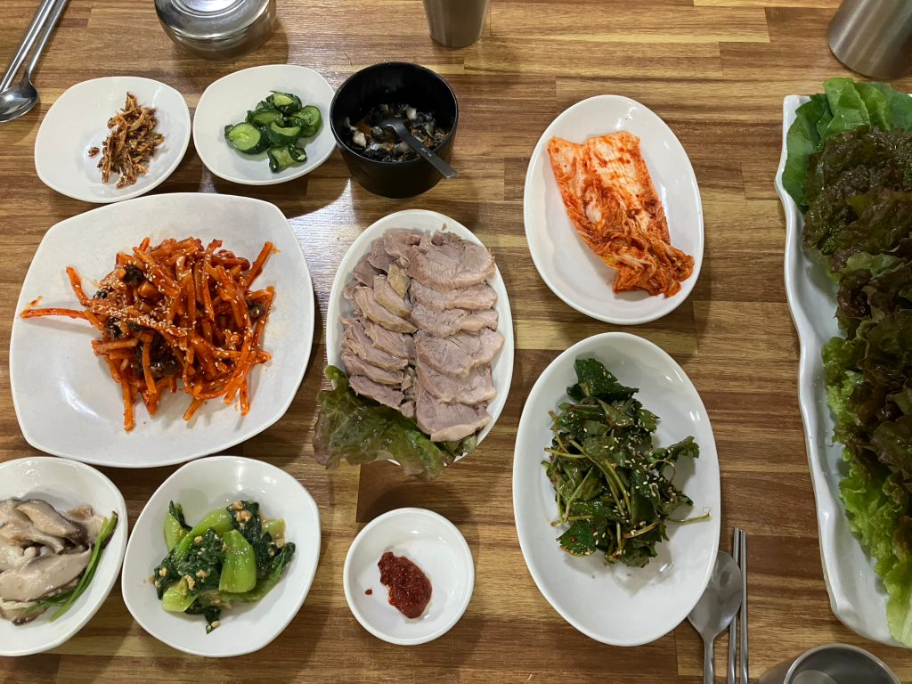
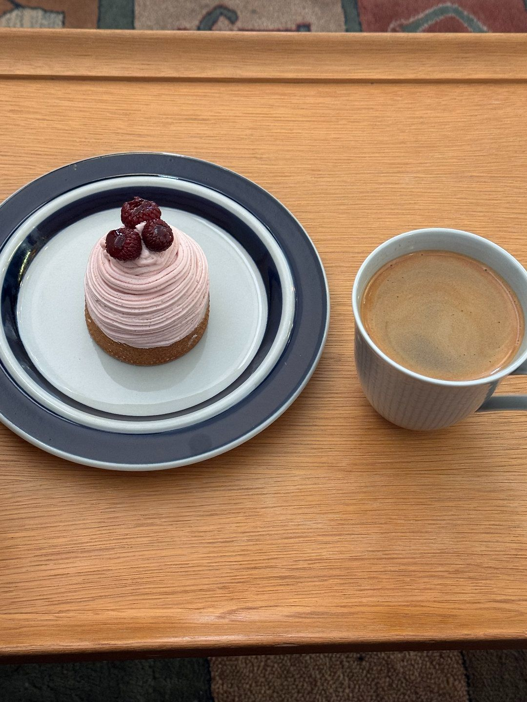
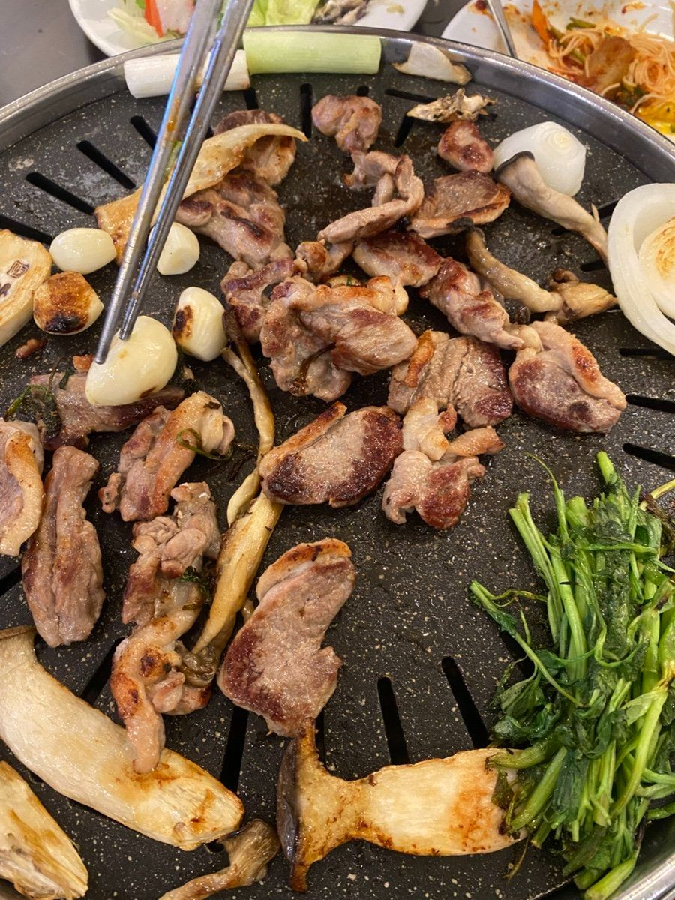
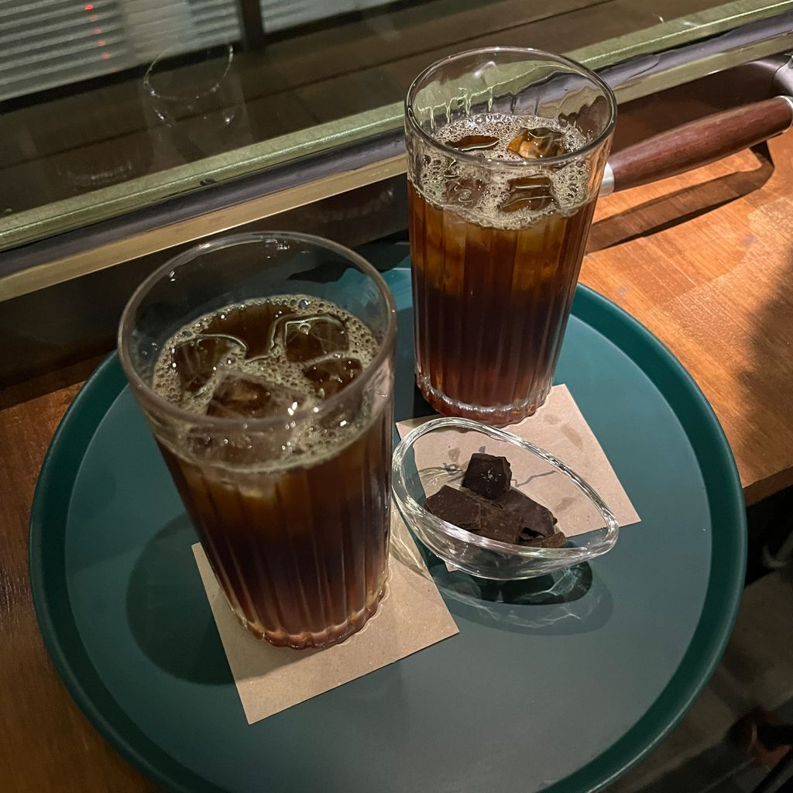
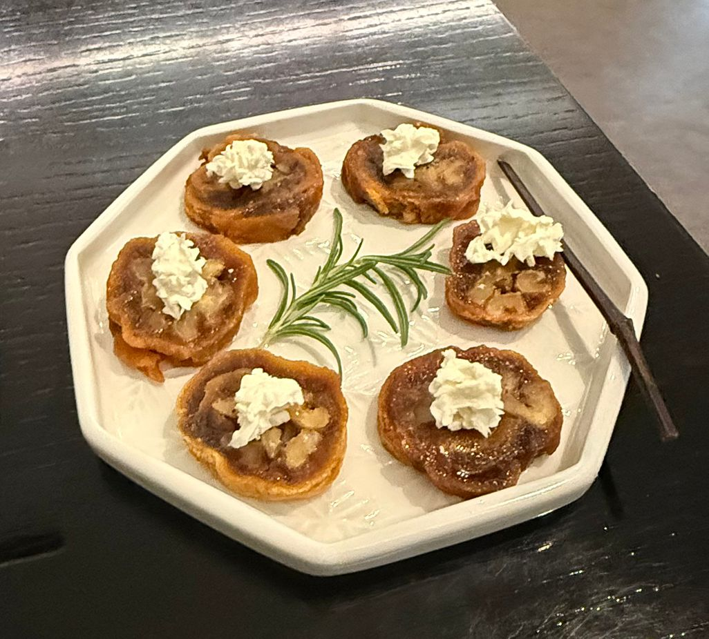
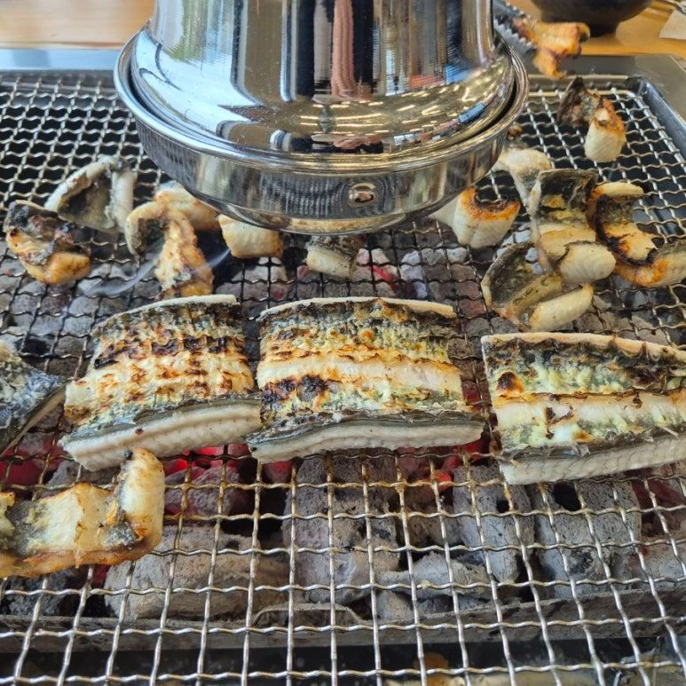
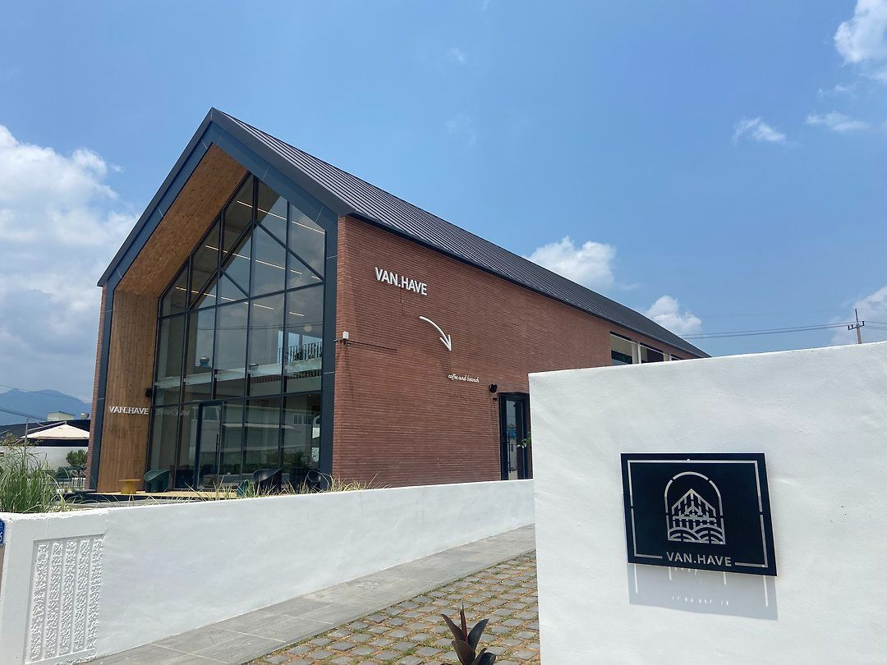

| 동선 | 식사 (40~50대 순위) | 디저트 (20~30대 순위) | 연결 방법 |
|---|---|---|---|
| 대중교통 1일차 점심 자가용 1일차 점심 | 산수쌈밥 동구 동계로 11 운전자 음식점 검색 외지인 한식 10위 | 비미 동구 동계로10번길 16 동명동 디저트 20대 1위·30대 1위 | 도보 5분 (286m)카카오맵 길찾기 |
| 대중교통 1일차 저녁 | 오리온 서구 원마륵1길 33 티맵 광주 맛집 4위 · 오리 전문점 | 물흐르듯 동구 동명로 62 동명동 디저트 20대 8위·30대 8위 | 대중교통 39분 (지하철+버스, 환승 1회, 1,250원)카카오맵 길찾기. 숙소 근처라 늦게까지 여는 곳으로 골랐다 |
| 자가용 1일차 저녁 | 오리온 서구 원마륵1길 33 티맵 광주 맛집 4위 · 오리 전문점 | 티소하 동구 동계천로 151-17 동명동 디저트 20대 2위·30대 2위 | 차 30분 (9.4km)카카오맵 길찾기. 늦으면 물흐르듯(8위)으로 대체 |
| 대중교통 2일차 점심 자가용 2일차 점심 | 더큰장어 본점 북구 하서로 596 현지인 9위 · 티맵 5위(같은 지점인지 확인 필요) | 반헤이브 북구 용전마을길 23-6 북구 디저트 20대 10위·30대 8위 | 버스 11분 (2.2km) / 차 6분 (1.8km)카카오맵 길찾기 |
| 10:30 | 광주송정역 도착 ✅ 역 2층 관광안내소도보 5분 · 290m카카오맵 길찾기 |
| 11:00 | 1913송정역시장 광산구 송정로8번길 13 · 보통 11:00~22:00(금·토·일 23:00)광주관광 · 매월 둘째·넷째 월요일 휴무광주관광47분 · 지하철 1호선 광주송정역 → 문화전당역, 도보 23분 포함 · 1,250원카카오맵 길찾기 |
| 12:30 | 점심 · 산수쌈밥 동구 동계로 11 · 월~토 10:30~20:00(라스트오더 19:30)카카오맵 · 우렁이쌈밥정식 10,000원(2인 이상)카카오맵도보 5분 · 286m카카오맵 길찾기 |
| 13:30 | 디저트 · 비미 ← 점심 바로 다음 동구 동계로10번길 16 · 조회일 23:00까지 영업카카오맵 · 메뉴판: 밀푀유 9,500원다이닝코드, 파리 브레스트 8,500원다이닝코드도보 14분 · 862m카카오맵 길찾기 |
| 14:30 | 국립아시아문화전당(ACC) ✅ → 옛 전남도청 ✅ ACC 내부 10:00~18:00, 월요일 휴관광주관광 · 2025~2026 한국관광100선 · 옛 전남도청은 영어 해설 운영(보도) · 두 곳 주소 같음(문화전당로 38)도보 17분 · 1.1km (옛 전남도청 → 펭귄마을)카카오맵 길찾기 |
| 17:00 | 양림동 역사문화마을 · 펭귄마을 ✅ 상시 개방·무료광주관광 · '양림동 스마트투어' 앱 한국어·영어·중국어·일본어44분 · 지하철 1호선 남광주역 → 김대중컨벤션센터역, 도보 26분 포함 · 1,250원 (버스 55번 + 지하철 환승 경로는 41분)카카오맵 길찾기 |
| 18:30 | 저녁 · 오리온 서구 원마륵1길 33 · 조회일 21:30까지 영업카카오맵 · 오리탕뚝배기 15,000원카카오맵, 오리로스(1인분) 19,000원카카오맵 · 김대중컨벤션센터역 4번 출구에서 573m(도보 9분) · 무료 주차카카오맵39분 · 지하철 김대중컨벤션센터역 → 버스 74·81·88·1187번 등, 환승 1회 · 1,250원카카오맵 길찾기 |
| 20:30 | 디저트 · 물흐르듯 ← 저녁 다음, 숙소 근처 동구 동명로 62 · 조회일 24:00까지 영업카카오맵 · 메뉴판: 바스크 티라미슈 치즈케이크 8,000원다이닝코드도보 9분 · 582m카카오맵 길찾기 |
| 21:30 | 숙박 · 유유한 (동명동 한옥 독채) 동구 백서로224번길 6-6 · 평일 200,000원 / 주말·공휴일 250,000원(2~4인)광주관광 · 공식 관광 사이트 한옥스테이 |
| 08:30 | 유유한 출발53분 · 버스 36번 → 518번(환승 1회) · 1,250원카카오맵 길찾기 |
| 09:30 | 국립5·18민주묘지 북구 민주로 200 · 참배 09:00~18:00(국가보훈부)국가보훈부 · 해설사 목~일 10:30~16:30광주관광29분 · 버스 518번 → 84번(환승 1회) · 1,250원카카오맵 길찾기 |
| 11:30 | 점심 · 더큰장어 본점 북구 하서로 596 · 브레이크타임 있음(조회 시점 16:30 재오픈)카카오맵, 영업 시작 시각은 확인 필요 · 동시 80대 주차카카오맵11분 · 버스 84·60·85번(환승 없음) · 1,250원 (도보는 28분 · 1.9km)카카오맵 길찾기 |
| 13:00 | 디저트 · 반헤이브 ← 점심 바로 다음 북구 용전마을길 23-6 · 조회일 21:00까지 영업카카오맵 · 대형 베이커리·브런치 카페1시간 11분 · 버스 05번 → 1002번(환승 1회) · 1,700원카카오맵 길찾기 |
| 15:30 | 광주송정역 도착 · 출발 |
| 09:00 | 증심사 (무등산국립공원) 동구 증심사길 177 · 09:00~17:00광주관광 · 무등산국립공원은 2025~2026 한국관광100선, 유네스코 세계지질공원차 4분 · 1.9km카카오맵 길찾기 |
| 10:20 | 전통문화관 ✅ 동구 의재로 222 · 정기 해설 10:30·13:30·15:30전통문화관 · 영어·일어·중국어 해설은 10일 전 예약전통문화관차 16분 · 5.1km카카오맵 길찾기 |
| 11:40 | 점심 · 산수쌈밥 동구 동계로 11 · 월~토 10:30~20:00카카오맵 · 주차장 없음, 가까운 공영주차장 이용(카카오맵 안내)카카오맵도보 5분 · 286m (차는 주차해 둔 채로)카카오맵 길찾기 |
| 12:40 | 디저트 · 비미 ← 점심 바로 다음 동구 동계로10번길 16 · 동명동 디저트 1위도보 14분 · 862m카카오맵 길찾기 |
| 13:40 | 국립아시아문화전당(ACC) ✅ → 옛 전남도청 ✅ ACC 주차 여부는 확인 필요 · 차로 돌아온 뒤 이동차 5분 · 1.1km (ACC → 펭귄마을)카카오맵 길찾기 |
| 16:30 | 양림동 역사문화마을 · 펭귄마을 ✅ 양림동 역사문화마을 공영주차장(100여 대, 남구 천변좌로418번길 2)광주관광 · 공식 관광 사이트 안내차 25분 · 15.9km (통행료 약 1,200원, 조회 시점 내비 추천 경로)카카오맵 길찾기 |
| 18:30 | 저녁 · 오리온 서구 원마륵1길 33 · 조회일 21:30까지 영업카카오맵 · 무료 주차카카오맵 · 오리탕뚝배기 15,000원카카오맵, 오리주물럭(200g) 19,000원카카오맵차 30분 · 9.4km카카오맵 길찾기 |
| 20:10 | 디저트 · 티소하 ← 저녁 다음 동구 동계천로 151-17 · 조회일 21:00까지 영업카카오맵 · 무료 주차카카오맵 · 시그니처 다관세트 12,000원카카오맵 · 21:00 넘기면 물흐르듯(동명로 62, 24:00까지)카카오맵동명동 안에서 이동카카오맵 길찾기 |
| 21:00 | 숙박 · 여로 (한옥스테이) 동구 동계로 16-17(산수동) · 무료 공영주차장광주관광 · 1인 평일 20,000원 / 주말 25,000원광주관광 · 황토염색·인절미 만들기 체험 |
| 09:00 | 동명동 출발차 23분 · 11.8km (산수쌈밥 기준)카카오맵 길찾기 |
| 09:30 | 국립5·18민주묘지 북구 민주로 200 · 참배 09:00~18:00국가보훈부차 14분 · 8.0km카카오맵 길찾기 |
| 11:30 | 점심 · 더큰장어 본점 북구 하서로 596 · 동시 80대 주차카카오맵 · 장어반탕 5,000원(카카오맵 메뉴)카카오맵차 6분 · 1.8km카카오맵 길찾기 |
| 13:00 | 디저트 · 반헤이브 ← 점심 바로 다음 북구 용전마을길 23-6 · 무료 주차카카오맵차 18분 · 12.1km카카오맵 길찾기 |
| 14:30 | 국립광주박물관 ✅ 북구 하서로 110 · 10:00~18:00(입장 마감 17:30)박물관 누리집 · 무료 · 다국어 리플릿박물관 누리집광주송정역 26분(13.3km) · 광주역 20분(5.6km) · 유스퀘어 16분(4.8km)카카오맵 길찾기 |
| 항목 | 내용 | 2인 금액 |
|---|---|---|
| 교통 | 1일차 3회 3,750원 + 2일차 4회 5,450원 = 1인 9,200원 (표시 요금, 환승 포함)카카오맵 길찾기 | 18,400원 |
| 점심 ① | 산수쌈밥 · 우렁이쌈밥정식 10,000원(2인 이상)카카오맵 × 2 | 20,000원 |
| 디저트 ① | 비미 · 밀푀유 9,500원다이닝코드 × 2 | 19,000원 |
| 저녁 | 오리온 · 오리탕뚝배기 15,000원카카오맵 × 2 (오리로스 1인분 19,000원카카오맵) | 30,000원 |
| 디저트 ② | 물흐르듯 · 바스크 티라미슈 치즈케이크 8,000원다이닝코드 × 2 | 16,000원 |
| 점심 ② | 더큰장어 본점 · 장어 가격 확인 필요 (카카오맵 메뉴는 장어반탕 5,000원카카오맵만 확인) | 확인 필요 |
| 디저트 ③ | 반헤이브 · 아메리카노 5,000원카카오맵 × 2 | 10,000원 |
| 숙박 | 유유한 · 한옥 독채 평일 200,000원 (주말·공휴일 250,000원, 2~4인)광주관광 | 200,000원 |
| 입장료 | 양림동·펭귄마을 무료광주관광 · ACC는 전시·공연별 상이광주관광 · 옛 전남도청, 국립5·18민주묘지는 확인 필요 | 0원~ |
| 항목 | 내용 | 2인 금액 |
|---|---|---|
| 주유비 | 1일차 약 5,083원 + 2일차 약 5,130원 (구간별 추정, 1종·휘발유 기준, 출발지·귀가 구간 제외)카카오맵 길찾기 | 약 10,213원 |
| 통행료 | 펭귄마을 → 오리온 구간 약 1,200원카카오맵 길찾기 | 약 1,200원 |
| 주차비 | 오리온·티소하·반헤이브 무료 주차카카오맵, 더큰장어 주차장 있음 · 산수쌈밥 인근·양림동 공영주차장 요금은 확인 필요 | 확인 필요 |
| 점심 ① | 산수쌈밥 · 우렁이쌈밥정식 10,000원카카오맵 × 2 | 20,000원 |
| 디저트 ① | 비미 · 밀푀유 9,500원다이닝코드 × 2 | 19,000원 |
| 저녁 | 오리온 · 오리탕뚝배기 15,000원카카오맵 × 2 | 30,000원 |
| 디저트 ② | 티소하 · 시그니처 다관세트 12,000원카카오맵 × 2 | 24,000원 |
| 점심 ② | 더큰장어 본점 · 장어 가격 확인 필요 | 확인 필요 |
| 디저트 ③ | 반헤이브 · 아메리카노 5,000원카카오맵 × 2 | 10,000원 |
| 숙박 | 여로 · 1인 평일 20,000원 × 2 (주말 25,000원)광주관광 | 40,000원 |
| 입장료 | 무등산·양림동 무료광주관광 · 국립광주박물관 무료박물관 누리집 · 전통문화관 해설 무료광주관광 · ACC 전시·공연별 상이광주관광 · 증심사, 옛 전남도청, 민주묘지는 확인 필요 | 0원~ |